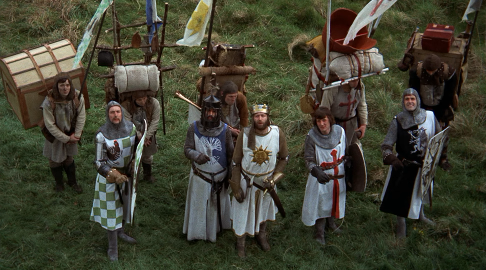

Lesson 0.1 Mon, 26 Aug 2024
Lesson 0.2 Tue, 27 Aug 2024
Lesson 0.3 Wed, 28 Aug 2024
Lesson 1.1 Thu, 29 Aug 2024
Lesson 1.2 Fri, 30 Aug 2024
Lesson 1.3 Tue, 03 Sep 2024
Lesson 1.4 Wed, 04 Sep 2024
Lesson 1.5 Thu, 05 Sep 2024
Lesson 2.1 Fri, 06 Sep 2024
Lesson 2.2 Mon, 09 Sep 2024
Lesson 2.3 Tue, 10 Sep 2024
Lesson 2.4 Wed, 11 Sep 2024
Lesson 2.5 Thu, 12 Sep 2024
Lesson 2.6 Fri, 13 Sep 2024
Lesson 2.7 Mon, 16 Sep 2024
Lesson 2.8 Tue, 17 Sep 2024
Lesson 3.1 Wed, 18 Sep 2024
Lesson 3.2 Thu, 19 Sep 2024
Lesson 3.3 Fri, 20 Sep 2024
Lesson 3.4 Mon, 23 Sep 2024
Lesson 4.1 Tue, 24 Sep 2024
Lesson 4.2 Wed, 25 Sep 2024
Lesson 4.3 Thu, 26 Sep 2024
Lesson 4.4 Fri, 27 Sep 2024
Lesson 4.5 Mon, 30 Sep 2024
Lesson 4.6 Tue, 01 Oct 2024
Lesson 4.7 Wed, 02 Oct 2024
Lesson 4.8 Mon, 07 Oct 2024
Lesson 4.9 Tue, 08 Oct 2024
Lesson 4.10 Wed, 09 Oct 2024
Lesson 5.1 Thu, 10 Oct 2024
Lesson 5.2 Fri, 11 Oct 2024
Lesson 5.3 Mon, 14 Oct 2024
Lesson 5.4 Tue, 15 Oct 2024
Lesson 5.5 Wed, 16 Oct 2024
Lesson 5.6 Thu, 17 Oct 2024
Lesson 5.7 Fri, 18 Oct 2024
Lesson 5.8 Mon, 21 Oct 2024
Midterm Review and exam Day 1 Tue, 22 Oct 2024
Midterm Review and exam Day 2 Wed, 23 Oct 2024
Midterm Review and exam Day 3 Thu, 24 Oct 2024
Midterm Review and exam Day 4 Fri, 25 Oct 2024
Midterm Review and exam Day 5 Mon, 28 Oct 2024
Midterm Review and exam Day 6 Tue, 29 Oct 2024
Midterm Review and exam Day 7 Wed, 30 Oct 2024
Midterm Review and exam Day 8 Thu, 31 Oct 2024
Midterm Review and exam Day 9 Fri, 01 Nov 2024
Lesson 6.1 Wed, 06 Nov 2024
Lesson 6.2 Thu, 07 Nov 2024
Lesson 6.3 Fri, 08 Nov 2024
Lesson 6.4 Tue, 12 Nov 2024
Lesson 6.5 Wed, 13 Nov 2024
Lesson 6.6 Thu, 14 Nov 2024
Lesson 6.7 Fri, 15 Nov 2024
Lesson 6.8 Mon, 18 Nov 2024
Lesson 6.9 Tue, 19 Nov 2024
Lesson 6.10 Wed, 20 Nov 2024
Lesson 6.11 Thu, 21 Nov 2024
Lesson 6.12 Fri, 22 Nov 2024
Lesson 7.1 Mon, 25 Nov 2024
Lesson 7.2 Tue, 26 Nov 2024
Lesson 7.3 Mon, 02 Dec 2024
Lesson 7.4 Tue, 03 Dec 2024
Lesson 7.5 Wed, 04 Dec 2024
Lesson 7.6 Thu, 05 Dec 2024
Lesson 7.7 Fri, 06 Dec 2024
Lesson 7.8 Mon, 09 Dec 2024
Lesson 8.1 Tue, 10 Dec 2024
Lesson 8.2 Wed, 11 Dec 2024
Lesson 8.3 Thu, 12 Dec 2024
Lesson 8.4 Mon, 06 Jan 2025
Lesson 8.5 Tue, 07 Jan 2025
Lesson 8.6 Wed, 08 Jan 2025
Lesson 8.7 Thu, 09 Jan 2025
Lesson 8.8 Fri, 10 Jan 2025
Lesson 8.9 Mon, 13 Jan 2025
Lesson 8.10 Tue, 14 Jan 2025
Lesson 9.1 Fri, 13 Dec 2024
Lesson 9.2 Mon, 16 Dec 2024
Lesson 9.3 Tue, 17 Dec 2024
Lesson 9.4 Wed, 18 Dec 2024
Lesson 9.5 Thu, 19 Dec 2024
Lesson 9.6 Fri, 20 Dec 2024
Lesson 10.1 Wed, 15 Jan 2025
Lesson 10.2 Thu, 16 Jan 2025
Lesson 10.3 Fri, 17 Jan 2025
Lesson 10.4 Tue, 21 Jan 2025
Lesson 10.5 Wed, 22 Jan 2025
Lesson 10.6 Thu, 23 Jan 2025
Unit 0: Mon, 26 Aug 2024 to Wed, 28 Aug 2024
Unit 1: Thu, 29 Aug 2024 to Thu, 05 Sep 2024
Unit 2: Fri, 06 Sep 2024 to Tue, 17 Sep 2024
Unit 3: Wed, 18 Sep 2024 to Mon, 23 Sep 2024
Unit 4: Tue, 24 Sep 2024 to Wed, 09 Oct 2024
Unit 5: Thu, 10 Oct 2024 to Mon, 21 Oct 2024
Midterm Review and exam: Tue, 22 Oct 2024 to Fri, 01 Nov 2024
Unit 6: Wed, 06 Nov 2024 to Fri, 22 Nov 2024
Unit 7: Mon, 25 Nov 2024 to Mon, 09 Dec 2024
Unit 8: Tue, 10 Dec 2024 to Tue, 14 Jan 2025
Unit 9: Fri, 13 Dec 2024 to Fri, 20 Dec 2024
Unit 10: Wed, 15 Jan 2025 to Thu, 23 Jan 2025
Course Calendar
Python II Programming Honors, Fall 2024
